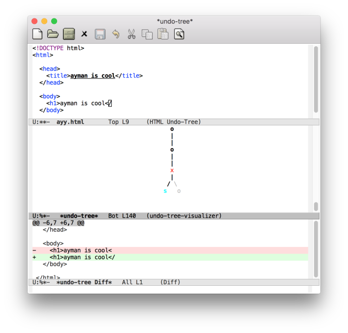

Emacs
A short guide to extending your favorite extensible text editor.
I use Emacs, which might be thought of as a thermonuclear word processor.
.emacs
Editing your .emacs file, where all your modifications are stored.
Modifying .emacs
- Generally located in a .emacs.d directory at ~/
- Init file for your emacs (every time you run emacs, this file will be run).
- Useful utilities and packages
- Customization through themes and etc.
Useful Commands
- (electric-pair mode 1)
- (setq x-select-enable clipboard t)
- (show-paren-mode 1)
- (global-linum-mode 1)
- (setq-default tab-width 4)
- (load-theme < theme-name > )
Macros
How to use macros in order to automate long tasks.
What is an Emacs Macro?
- An Emacs Macro records the user’s actions (keyboard, mouse, or menu-related) and executes in a single command
- This command can then be called in order to repeat the macro’s actions.
- Defined Macros (with names) can be saved in your .emacs file for future use.
Defining Macros
- C-x ( or < f3 > to begin defining a macro
- C-x ) or < f4 > to stop defining the macro
- M-x name-last-kdb-macro < name > to give your macro a name
Using Macros
- C-x e or < f4 > to use the last defined macro
- C-u < n > C-x e to use your last defined macro n times
- M-x insert-kbd-macro < name > to insert macro into a file (if you’re modifying .emacs)
MELPA
The Milkypostman Emacs Lisp Package Archive, where we get packages to improve our Emacs experience.
Where to Find Packages
- Most emacs packages are located in a package archive called MELPA.
- MELPA is the biggest archive for Emacs packages, and is where we will get all of our packages.
- To be able to install packages from MELPA, you need the following code in your .emacs (also found at
http://melpa.org/#/getting-started
)
flycheck
Error checking as you code.
What is flycheck?
- Flycheck is an emacs package that highlights incorrect code/code that won’t compile, and states the error.
How can I install it?
- M-x package-install RET flycheck RET
How can I use it?
- To enable flycheck every time you use emacs, put the following line in your .emacs
- (add-hook 'after-init-hook #'global-flycheck-mode)
yasnippet
Inserting snippets of common code to save you time.
What is yasnippet?
- Yasnippet lets you type abbreviations that expand into code.
How can I install it?
- M-x package-install RET yasnippet RET
How can I use it?
- To enable yasnippet when opening emacs, add this to your .emacs
- (yas-reload-all)
- (add-hook ‘prog-mode-hook
- #’yas-minor-mode)
- Yasnippet lets you create your own abbreviations, but the default ones can be found with this command:
- M-x yas-describe-tables RET
- To use an abbreviation, simply type it in and press TAB.
auto-complete
Letting you press TAB to complete your code, like modern text editors.
What is auto-complete?
- Auto-complete is a package that implements tab completion in Emacs.
How can I install it?
- M-x package-install RET auto-complete RET
How can I use it?
- To enable auto-complete every time you use emacs, put the following line in your .emacs
- (ac-config-default)
- Completion results show up after 0.5 seconds; press TAB to cycle through them and RET to select one.
undo-tree
Letting you view old changes in a tree format.
What is undo-tree?
- Undo-tree saves all edits you’ve made in a file, and lets you go back to any instance without spamming C-/, visualized in a tree format.
How can I install it?
- M-x package-install RET undo-tree RET
How can I use it?
- To enable undo-tree when opening emacs, add this to your .emacs
- (global-undo-tree-mode)
- To use it, do M-x undo-tree-visualize
- This opens up two windows, one tree of all your edits and one window that shows changes in a manner similar to git diff.
- To go back to old changes, click a node on the tree.

Basic Commands
Basic commands in Emacs.
Package Commands
Commands used in the package list in emacs.
- To get an interactive list of all MELPA packages, use the command:
- M-x list-packages RET
- While in this mode, certain letters act as commands when on a line.
- i to install
- d to delete package
- u to upgrade
- U to upgrade all
- x to make changes
- If you know what package you’re installing / uninstalling, here are direct commands.
- M-x package-install RET < pkg > RET
- M-x package-delete RET < pkg > RET